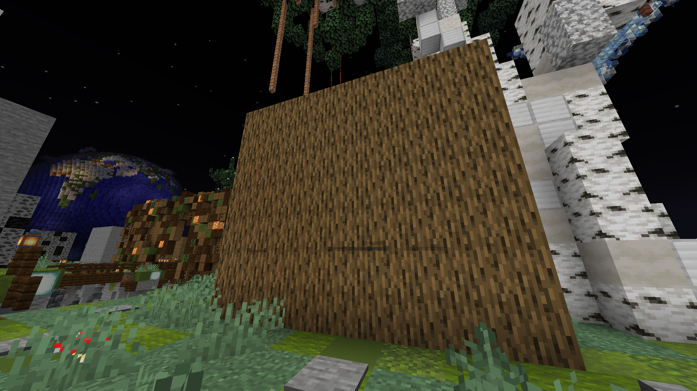
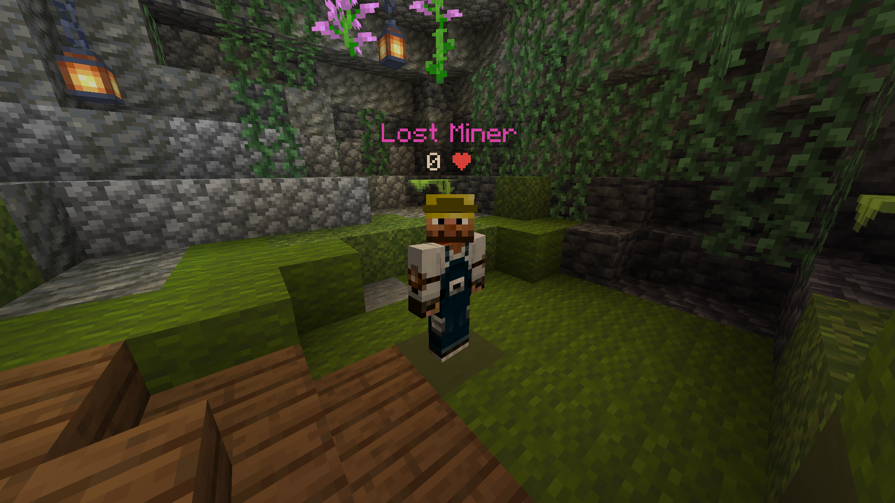

Mines
On the Mainland you will first need to walk to the wood mine.

There are two wood mines in this realm,
you can find the first one by walking forwards and then left. The second wood mine is on the right.
It is the same layout for the stone, coal, iron, diamond and emerald mine.
Autocompressors
One of the most important features on DireSkies are the autocompressors because if you have them unlocked
you dont need to run back to the shop at spawn if you want to compress a material. Autocompressors are just doing that for you.
Just go the shop at spawn and in there to the left and right click the Technician and trade for the autocompressor you want to have.
Then right click anywhere while you are holding the autocompressor. Now you have the autocompressor for this material unlocked.
Type "/compressor" into chat and a menu with all the compressors will open.
You are might asking yourself where you can unlock the auto supercompressor and the auto megacompressor.
You dont have access to these to right now but we will later get into that point.
Upgrading tools, weapons and armor
First you want to go to one of the two wood mines. There you have to mine four logs with your fist.
Then you have to look out for the Lumberjack. Right click at the NPC and select the trade for the axe.
Now you have to upgrade your axe by mining more wood and trading the axe for the next tier axe.
Once you have reached the final axe tier you have to type /spawn in chat and go to the shop at your left.
Go to the left in the shop and find the wood pickaxe trader. Then buy the tier one wood pickaxe with four logs.
Upgrade your pickaxe now and then move to the stone mine. Now mine the stone and buy the stone pickaxes from the shop.
Repeat the same thing untill you are at the tier eight emerald pickaxe. Now you want to get an elytra.
For the elytra tier one you have to mine 32 Supercompressed emeralds.
Also mine one extra supercompressed emerald for some rockets to actually fly.
Type again /spawn in the chat and turn right. Then walk up the stair untill you reach the stump of the big tree.
Walk around and look for the Phantom. Right click it and trade the 32 Supercompressed emeralds for the tier one elytra.
Also buy some rockets with your left over emeralds. Now you can upgrade your elytra to tier three, get a sword, get armor
or move on to the next realm to upgrade your pickaxe. In my opinion the last option is the best.
Upgrading your elytra, sword or armor
To upgrade your elytra you will need to mine some more emeralds. You can look up the prices at the Phantom.
For getting a sword you will need to start from the beginning again. Mine four wood to get a tier one wooden sword.
Then keep upgrading it in the shop at spawn untill you are at the tier eight emerald sword.
To get full armor you also need to start mine wood again. Mine four for every armor piece and then trade it for the armor.
Then also upgrade your armor untill you have emerald eight armor.
The next realm
The server is based on multiple realms. You can find all of them in the navigationbar at the top of your screen.
But the next would be the Diremines. To get there you need to buy the realm-voucher for 24 supercompressed diamonds and 32 supercompressed emeralds
The trader for it is found in a little cave right to spawn.

Right click with the voucher in your hand and type /warp into chat. Now you can also see all the realms listed ingame.
Click onto the realm you want to travel to. Right now you only have the Mainland and Diremines unlocked.
If you dont want to click onto the items all the time you can also use "/warp deepmines" to get directly teleported into the Diremines
Extras
A list of the special items and features in the Mainland can be found
here